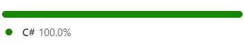
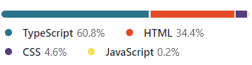

Projects FinanceWise
Projects FinanceWise
Following is the list of the built Modules, their input vouchers & outputs;
01 Finance ModuleBased on strong and tested accounting functions, this module handles the general ledger of the company, keeps you up-to-date with financial assets and provide all kind of reports for forecasting, budgeting and planning with just a few clicks.
Opening Journal
Cash / Cheque receipt
Cash / Cheque payment
Bank Voucher
Journal Voucher
Chart of Accounts
Cash Book
Account Ledger
Group Account
Cheque status
Screen Ledger
A complete purchasing system prepared to handle organizations with multiple headquarters, takes care of the procurement, providing multiple tools, from planning to requisition, from gate pass to stock placement and the purchase invoice etc. It controls the supply and inventory and reduces error margins by automating the interdepartamental communication between front office and warehouses.
Purchase Order
Goods Receipt Note / Barter In
Purchase Voucher
Purchase Return
Purchase Journal
Purchase Order Cancellation
Purchase Report
Purchase Return
Periodic Purchase statement
GRN Report
This module implements the full Sales department's cycle, from enquiry to delivery including Customer Orders, their scheduling, shipping and invoicing. With real-time stock data, personalized rates and other critical information, it optimizes sales efficiency and ensures timely deliveries. FinanceWise's flexibility allows you to place the sales order against the sales quotation, manually or by combining both of them. It also maintains sales person log and make automatic credit check for managing the credit limits of the customers.
Sale Order
Delivery Note / Barter Out
Credit / Cash Sale
Sale Return
Bilty Update
Claims
Sale Journal
Sale Order Cancellation
Cash
Sales
Sales Return
Periodic Sales Statement
Unsold Items
Product Repeat
Periodic Purcha
Sales/Recovery Comparison
Sales/Production Comparison
Fast Sales Summary
Pending Order Status
New pending Order Status
Sales Order Report
This module designs and automates the production process that must be followed to convert raw materials into finished goods. It helps in cost calculations and reduction by optimizing time in production planning and stock control.
Individual production
Multiple production
Product Planning
Stock Issuance
Stock Return
Stock Consumption
Periodic Report
Contractor Report
Production PLanning
Production Report
Contractor Production Report
Connected with all the relavant departments, this module helps make better decisions by providing accurate inventory data, enables businesses to control their logistics, operations, finance, and inventory from a singular system reducing errors and improving efficiency.
Stock Transfer
Stock Transfer Acknowledgement
Stock Consumption
Stock Inward
Production Change
Gate Pass
Product Listing
Product Ledger
Stock Balance
Stock Ageing
Dead Stock
Stock Transfer
Stock Consumption
Remote submission of these profiles from within any voucher they are required, allows the user to select a customer or supplier with its initials or from a dropdown list which shows their current balance at real-time. Sales vouchers evaluates the personalized rates for each client using the price and discounts lists. Suppliers profiles plays a very important role in production for cost evaluation. Finally all the data set returns a nice output where any supplier or customer's history or statistics can be viewed with a very user friendly interface.
Customers / Suppliers Vouchers
Main Group
Sub Group
Cities
Listing
Balance
Ledger
Aging
Recovery
Discount Policy
Last but not least, from the following inputs, Accounts voucher with a very simple UI is the backbone of the app. It enables the user to submit data very easily, which is later used to make complex internal operations in different sectors of the organization. Products voucher lets you add a new product from the dropdown list within any voucher it is required. Other input vouchers lets you handle the pricelists and discounts both globally or client-wise.
Customer Pricelist
Global Pricelist
Discount Policies
Transporters
Locations
Daily Log
Expense Comparison
Periodic Expense
User Activity Log Sheet
Trial Balance
Master Trial Balance
Profit/Loss Statement
Profit/Loss Comparison
Periodic Profit/Loss Ratio
Balance Sheet
Balance Sheet Comparison
Project Management
Frontend Development
Backend Development
Deployments & Hostings
Angular Framework
.NET Core
ASP.NET
SAP Crystal Reports
Ngx-Charts
Angular Material
Bootstrap
MSSQL
Sql Queries
LINQ
Back-end
Front-end
 Github Backend
Github Frontend
Github Backend
Github Frontend